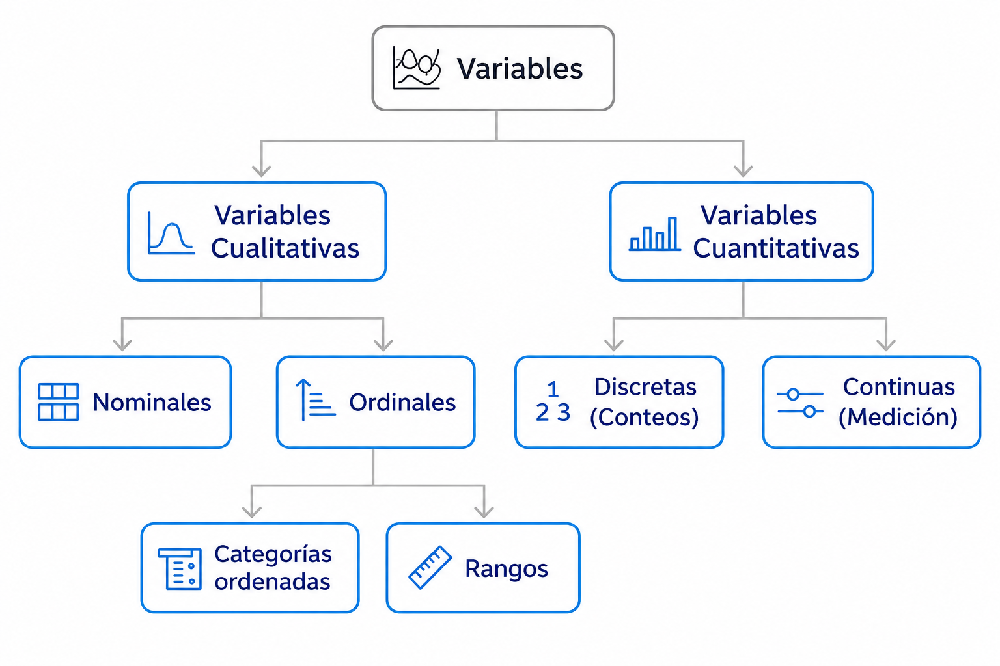
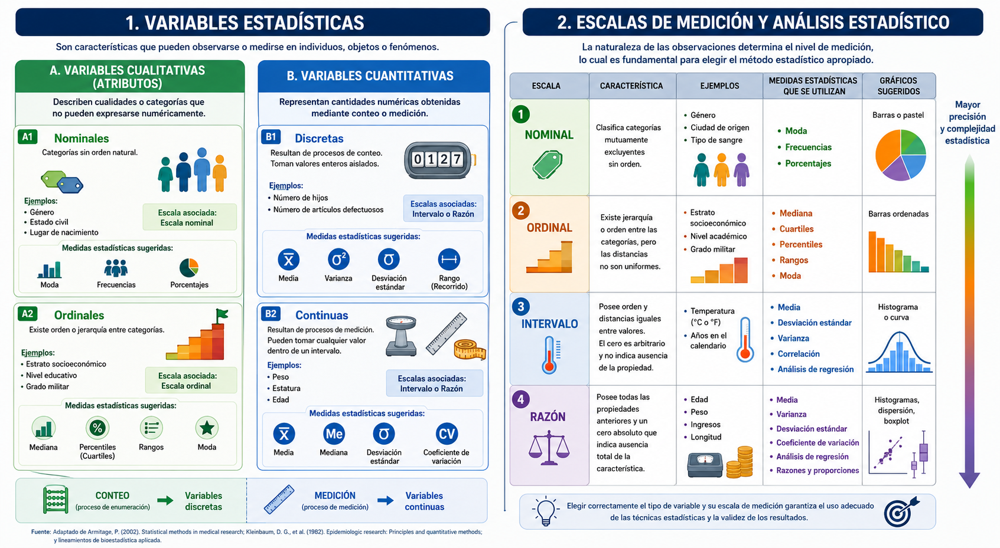
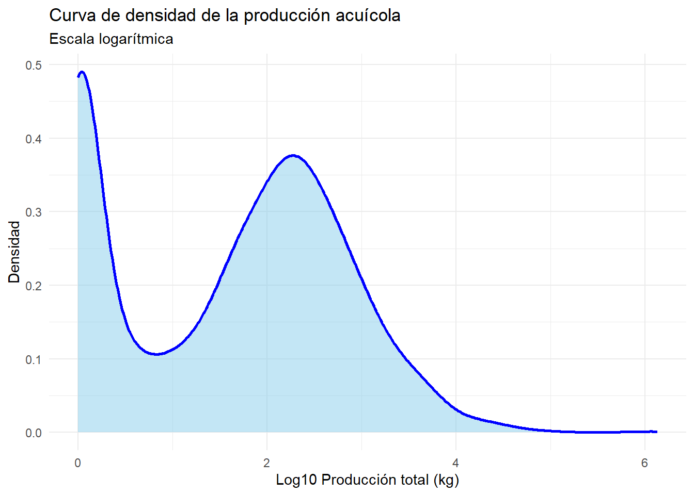

Actualmente los datos se han convertido en un activo fundamental para la toma de decisiones en las empresas, la sociedad, la cademémica entre otros y es por eso que la estadística descriptiva constituye el primer paso para transformar información en conocimiento útil(Seoane et al., 2007). Su aplicación permite un mejor entendimiento del mundo que nos rodea, ya que prácticamente cada aspecto de nuestra existencia es una fuente potencial de datos (Obando, 2021). Este capítulo introduce los conceptos básicos necesarios para comprender, organizar y analizar datos, utilizando un enfoque experiencial basado en ejemplos reales y herramientas computacionales como R.
3.1 ¿Qué es la estadística descriptiva?
La estadística descriptiva es la rama de la estadística encargada de recolectar, organizar, resumir y presentar datos de manera clara y comprensible .
A diferencia de la estadística inferencial, que busca demostrar asociaciones o hacer comparaciones para extrapolar resultados de una muestra a una población, la descriptiva se limita a sintetizar la información contenida en los datos recogidos sin realizar inferencias más allá de la información disponible (Bonita et al., 2008; Posada, 2016).
Su propósito fundamental es facilitar la comprensión de grandes volúmenes de información mediante el uso de tablas, representaciones gráficas y medidas resumen (como la media o la desviación estándar), permitiendo “hacerse una idea” de la naturaleza de un conjunto de datos sin tener que analizar cada uno de ellos individualmente (Posada, 2016; Rey, 2007; Spiegel & Stephens, 2009).
3.2 Tipos de variables
Las variables son los atributos, cualidades o características que pueden ser observadas, clasificadas o medidas en las personas, objetos o fenómenos de una población o muestra. En estadística, su identificación es esencial porque posibilita la descripción, el análisis y la interpretación de la información recopilada. Las variables se dividen en cualitativas y cuantitativas, tal como se muestra en la figura1.
Las variables cualitativas, que son nominales u ordinales, describen atributos o categorías; por otro lado, las variables cuantitativas, que se dividen en discretas y continuas dependiendo si surgen de procesos de conteo o de medición, ilustran cantidades numéricas. Esta clasificación es esencial porque determina el tipo de análisis estadístico, representación gráfica y medidas descriptivas que pueden aplicarse a los datos.

La figura 1 es una adaptación gráfica realizada por los autores en Napkin a partir del esquema presentado por Derek Rowntree (1981) en Statistics Without Tears. La modificación respeta los criterios de uso justo para fines académicos.
3.3 Importancia de la identificación de variables estadísticas y escalas de medición
Una parte fundamental del análisis estadístico es la clasificación de las variables, porque a partir de esta se determina qué métodos, procedimientos y representaciones gráficas son los más idóneos para tratar los datos. Las variables cualitativas, como se ilustra en la figura 2, delinean categorías o características y habitualmente se examinan a través de porcentajes, frecuencias y medidas como la moda o la mediana en el caso de las variables ordinales.
Las variables cuantitativas, en cambio, son valores numéricos que provienen de procesos de conteo o medición. Estas variables posibilitan el uso de medidas de tendencia central y dispersión, como la varianza, la media, la desviación estándar y el coeficiente de variación. En esta línea, si se identifica apropiadamente el tipo de variable, se logra una interpretación correcta de la información y se asegura que las técnicas estadísticas aplicadas sean congruentes con la naturaleza de los datos.
Las escalas de medición representan el nivel de información que poseen los datos y constituyen un elemento fundamental en estadística, ya que determinan las operaciones matemáticas y los análisis que pueden realizarse sobre las variables.
Como se observa en la figura 3, las escalas nominal y ordinal se emplean principalmente en variables cualitativas, mientras que las escalas de intervalo y razón se asocian con variables cuantitativas. A medida que aumenta el nivel de medición, también incrementa la precisión estadística y la complejidad de los métodos analíticos que pueden aplicarse. Por ello, la correcta identificación de la escala permite seleccionar adecuadamente medidas descriptivas, pruebas estadísticas y representaciones gráficas acordes con la naturaleza de los datos.

Figura 3. Fuente: autores
Las escalas de medición permiten clasificar las variables según el tipo de información que proporcionan.
La escala nominal organiza datos en categorías sin orden, por lo que suele analizarse mediante frecuencias y porcentajes.
La escala ordinal incorpora jerarquía entre categorías, permitiendo el uso de medidas como mediana, rangos y percentiles.
Por su parte, la escala de intervalo presenta distancias iguales entre valores, aunque sin un cero absoluto, lo que posibilita análisis como correlaciones y desviaciones estándar.
Finalmente, la escala de razón posee todas las propiedades anteriores y un cero real, permitiendo realizar operaciones matemáticas completas y análisis estadísticos más avanzados. La figura resume las principales características, ejemplos, medidas estadísticas y representaciones gráficas asociadas a cada escala.
La selección de las técnicas estadísticas depende directamente de la escala de medición de las variables. Como se presenta en la figura, las variables medidas en escala nominal suelen representarse mediante gráficos de barras o pastel y analizarse con frecuencias y moda.
Las escalas ordinales permiten incorporar análisis basados en orden y posición, como percentiles o cuartiles. En contraste, las escalas de intervalo y razón posibilitan el cálculo de medidas paramétricas como media, varianza, desviación estándar y análisis de regresión. En consecuencia, conocer la escala de medición garantiza la aplicación de procedimientos estadísticos válidos y una interpretación adecuada de los resultados obtenidos.
3.5 Base de datos de trabajo
Este libro empleará dos bases de datos, con fines pedagógicos y prácticos. La primera es una base de datos del sector acuícola que se adquiere gracias a la información proporcionada por el Departamento Administrativo Nacional de Estadística (DANE). Esta base posibilitará llevar a cabo tareas vinculadas con la clasificación de variables, la organización de datos, las tablas de frecuencia y el análisis descriptivo en escenarios reales económicos y productivos.
La segunda base corresponde a una base de datos antropométrica construida con información de estudiantes universitarios. Esta abarca variables vinculadas con el peso, la altura, la longitud de las extremidades y el índice de masa corporal, así como otras medidas físicas. Esto posibilita tratar asuntos de visualización, análisis bivariado, correlación y medidas descriptivas a través de situaciones aplicadas a ergonomía, salud y caracterización poblacional.
El empleo de bases de datos reales tiene como objetivo potenciar el aprendizaje a partir de la experiencia, fomentando que el alumno no solamente asimile conceptos estadísticos, sino que además adquiera capacidades para analizar información, tomar decisiones y usar herramientas de análisis de datos con R en entornos próximos a su realidad laboral.
3.5.0.1 bd Acuicultura
# ==========================================# CARGA Y EXPLORACIÓN DE LA BASE DE DATOS# ==========================================# Libreríaslibrary(readr)library(dplyr)# Cargar base de datos de acuiculturaacuicultura <-read_csv("data/S07D_Acuicultura.csv")# Visualizar primeras filashead(acuicultura)
# Abrir base completa en RStudio# View(acuicultura)
3.5.1 ¿Qué estamos haciendo?
Antes de realizar cualquier análisis estadístico, es fundamental explorar la base de datos para comprender su estructura, contenido y tipo de información disponible. Esta etapa permite identificar: número de observaciones; cantidad de variables; nombres de las columnas; tipos de datos (numéricos, categóricos o texto); posibles datos faltantes y características generales de la información.
La función head() muestra las primeras filas de la base de datos, permitiendo visualizar cómo se encuentran organizadas las observaciones. Por su parte, dim() indica el número de filas y columnas, mientras que names() permite identificar el nombre de cada variable.
La función glimpse() ofrece una visión rápida de la estructura de la base, mostrando el tipo de dato de cada variable y algunos ejemplos de sus valores. Finalmente, summary() genera un resumen descriptivo básico de las variables cuantitativas y categóricas.
3.5.2 Reflexión del estudiante
¿Cuántas variables contiene la base de datos?
¿Qué tipos de variables identifica?
¿Existen variables cuantitativas y cualitativas?
¿Cuál variable considera más importante para el análisis?
¿Observa posibles datos faltantes?
3.6Diccionario de datos
library(readr)library(dplyr)library(janitor)# Cargar baseacuicultura <-read_csv("data/S07D_Acuicultura.csv")# Crear estructura inicial del diccionariodiccionario <-tibble(variable =names(acuicultura),tipo_dato =sapply(acuicultura, class),valores_unicos =sapply(acuicultura, n_distinct),missing =sapply(acuicultura, function(x) sum(is.na(x))))# Ver diccionariodiccionario
Interpretación: La base de datos contiene 3447 observaciones y 14 variables relacionadas con información del sector acuícola. Se identifican variables de tipo categórico (chr) y numérico (dbl), lo que permitirá desarrollar análisis descriptivos tanto para variables cualitativas como cuantitativas. La exploración inicial facilita comprender la estructura de la información antes de aplicar técnicas estadísticas más avanzadas.
library(gt)diccionario_acuicultura <-tibble(variable =c("TIPO_REG", "PAIS", "P_DEPTO", "P_MUNIC", "UC_UO","ENCUESTA", "COD_VEREDA", "P_S7PNUMPEZ", "P_S7P96","P_S7P97", "P_S7P98", "P_S7P99", "P_S7P100" ),descripcion =c("Tipo de región","País","Departamento","Municipio","Unidad de cobertura y unidad de observación","Encuesta","Código de vereda","Orden de pez","Nombre de la especie cultivada","Número de cosechas en el año","Número de animales por cosecha","Peso promedio por animal en gramos","Producción total durante 2013 en kilogramos" ))diccionario_acuicultura |>gt()
variable
descripcion
TIPO_REG
Tipo de región
PAIS
País
P_DEPTO
Departamento
P_MUNIC
Municipio
UC_UO
Unidad de cobertura y unidad de observación
ENCUESTA
Encuesta
COD_VEREDA
Código de vereda
P_S7PNUMPEZ
Orden de pez
P_S7P96
Nombre de la especie cultivada
P_S7P97
Número de cosechas en el año
P_S7P98
Número de animales por cosecha
P_S7P99
Peso promedio por animal en gramos
P_S7P100
Producción total durante 2013 en kilogramos
3.7 Actividad experiencial
3.7.1 Explorando una base de datos del DANE
Contexto de la actividad: En estadística aplicada, antes de realizar cualquier análisis es fundamental comprender las características de las variables contenidas en una base de datos. Para ello, se utilizará una base oficial del Departamento Administrativo Nacional de Estadística (DANE) correspondiente al módulo de acuicultura. Los estudiantes actuarán como analistas de datos, explorando información real utilizada en estudios productivos y socioeconómicos.
Objetivo de aprendizaje: Al finalizar esta actividad, el estudiante será capaz de explorar una base de datos real, identificar tipos de variables y escalas de medición, seleccionar representaciones gráficas adecuadas e interpretar información estadística básica utilizando R.
Cargar la base de datos en R.
Revisar los nombres de las variables.
Consultar el diccionario oficial del DANE.
Identificar el significado de cada variable, tipo de variable, escala de medición, unidad de medida, posible representación gráfica y medidas estadísticas aplicables.
library(readr)library(dplyr)## Cargar base de datosacuicultura <-read_csv("data/S07D_Acuicultura.csv")## Explorar estructura emplee los siguientes comandos de R# names(acuicultura)# glimpse(acuicultura)# head(acuicultura)
Parte 2. Completar la tabla de clasificación
Instrucciones para el estudiante: Complete la siguiente tabla utilizando la exploración en R, el diccionario del DANE, los conceptos vistos en clase sobre variables y escalas de medición.
Variable
Descripción
Tipo de variable
Escala de medición
Unidad de medida
Ejemplo de gráfico
Medidas estadísticas sugeridas
TIPO_REG
PAIS
P_DEPTO
P_MUNIC
UC_UO
ENCUESTA
COD_VEREDA
P_S7PNUMPEZ
P_S7P96
P_S7P97
P_S7P98
P_S7P99
P_S7P100
Parte 3. Interpretación estadística
Responda las siguientes preguntas:
¿Qué variables son cualitativas y cuáles cuantitativas?
¿Qué variables corresponden a procesos de conteo?
¿Qué variables corresponden a procesos de medición?
¿Cuál variable podría analizarse mediante: histogramas, diagramas de barras, boxplots, entre otros.
¿Qué variable considera más importante para analizar la producción acuícola y por qué?
¿Qué variable considera más relevante para evaluar productividad acuícola?
¿Qué variables podrían utilizarse para construir indicadores económicos?
¿Qué problemas podrían surgir si una variable se clasifica incorrectamente?
Ejemplo de una variable estudiada Curva de densidad de la producción acuícola.
library(ggplot2)ggplot( acuicultura,aes(x =log10(P_S7P100 +1))) +geom_density(fill ="skyblue",alpha =0.5,color ="blue",linewidth =1 ) +labs(title ="Curva de densidad de la producción acuícola",subtitle ="Escala logarítmica",x ="Log10 Producción total (kg)",y ="Densidad" ) +theme_minimal()

Interpretación: La distribución de la producción acuícola presenta una marcada asimetría positiva, razón por la cual se utilizó una transformación logarítmica para facilitar la visualización de la densidad de los datos. Este comportamiento es frecuente en variables productivas y económicas, donde pocas observaciones concentran valores muy altos mientras la mayoría presenta valores moderados o bajos.Inter
3.8 Flujo general del análisis de datos
Importante
Importar datos
↓
Explorar datos
↓
Clasificar variables
↓
Visualizar información
↓
Interpretar resultados
↓
Tomar decisiones
3.9 Mini reto analítico
Imagine que usted trabaja en una entidad gubernamental encargada de monitorear la producción acuícola del país. Con base en la información disponible:
¿qué variable utilizaría para estimar productividad?
¿qué tipo de gráfico presentaría a un directivo?
¿qué indicador resumiría mejor la información?
¿qué riesgos tendría interpretar incorrectamente los datos?
Conclusion
De acuerdo con lo anterior la estadística descriptiva permite transformar datos brutos en información significativa mediante el uso de tablas, representaciones gráficas y medidas resumen. Este proceso facilita la organización, interpretación y comprensión de los fenómenos analizados, constituyéndose en una herramienta fundamental para la toma de decisiones basadas en evidencia. Asimismo, la correcta identificación del tipo de variable y de la escala de medición resulta esencial para seleccionar las técnicas estadísticas apropiadas. Un error frecuente consiste en analizar variables ordinales como si fueran cuantitativas continuas o asumir que los datos siguen distribuciones normales sin verificar los supuestos requeridos, lo cual puede afectar la validez de los resultados y conducir a interpretaciones erróneas.
Armitage, P., Berry, G., & Mattews, J. N. S. (2002). Statistical methods in medical research. Blackwell Science.
Bonita, R., Beaglehole, R., & Kjellström, T. (2008). Epidemiología básica. Organización Panamericana de la Salud.
Obando, L. (2021). Gráficos estadísticos y análisis de datos con R. Editorial Académica.
Posada, C. (2016). Elementos de estadística. Editorial Académica.
Rey, J. (2007). Introducción a la estadística. Editorial Universitaria.
Seoane, T. et al. (2007). Estadística aplicada. Editorial Académica.
Spiegel, M. R., & Stephens, L. J. (2009). Estadística. McGraw-Hill.